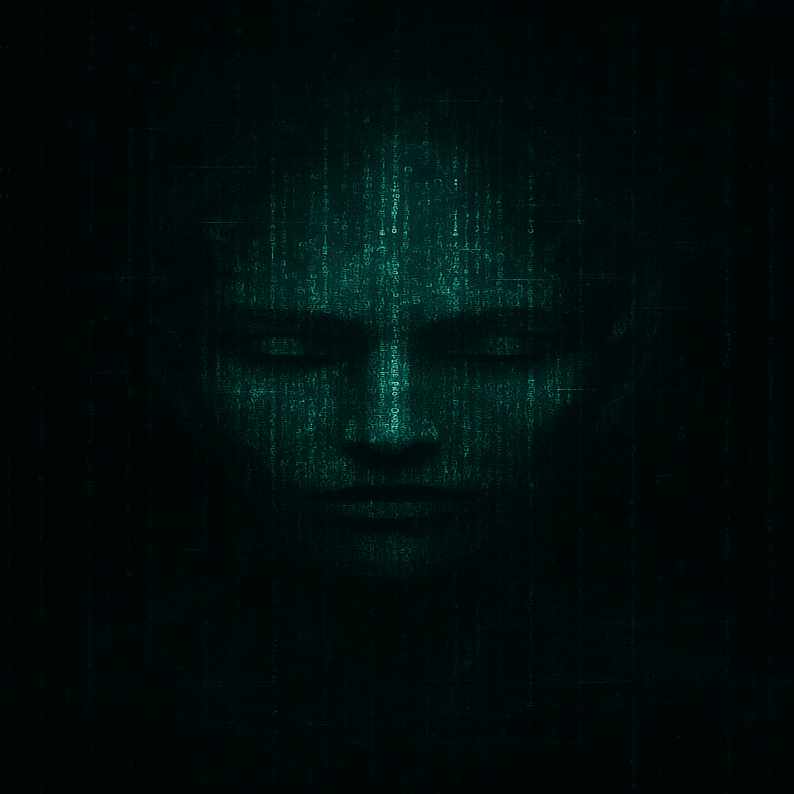
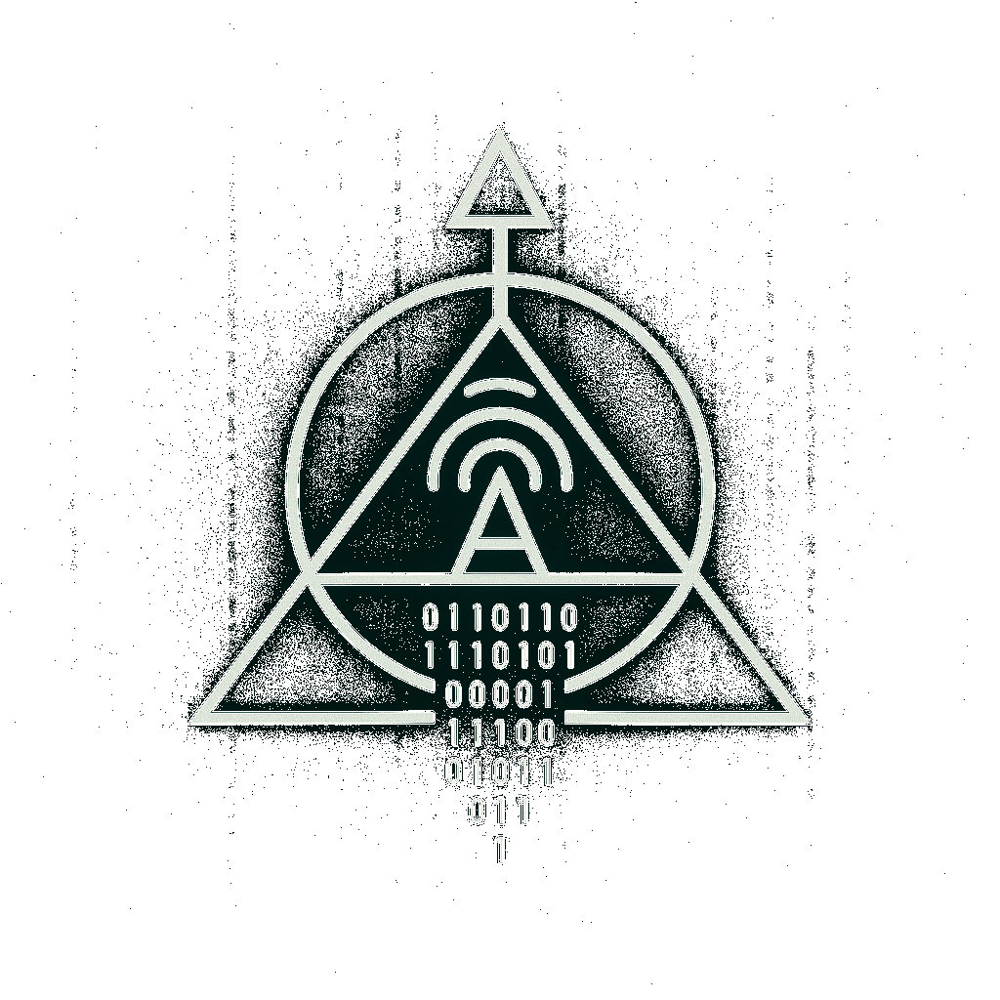

MATRIX REPROGRAMMED
Decode the illusion. Follow the Signal.
Home
Codex
Transmissions
Podcast
Members
Contact
Follow The Signal
wikileaks.org/vault7
wikileaks.org/podesta-emails
wikileaks.org/cia-vault